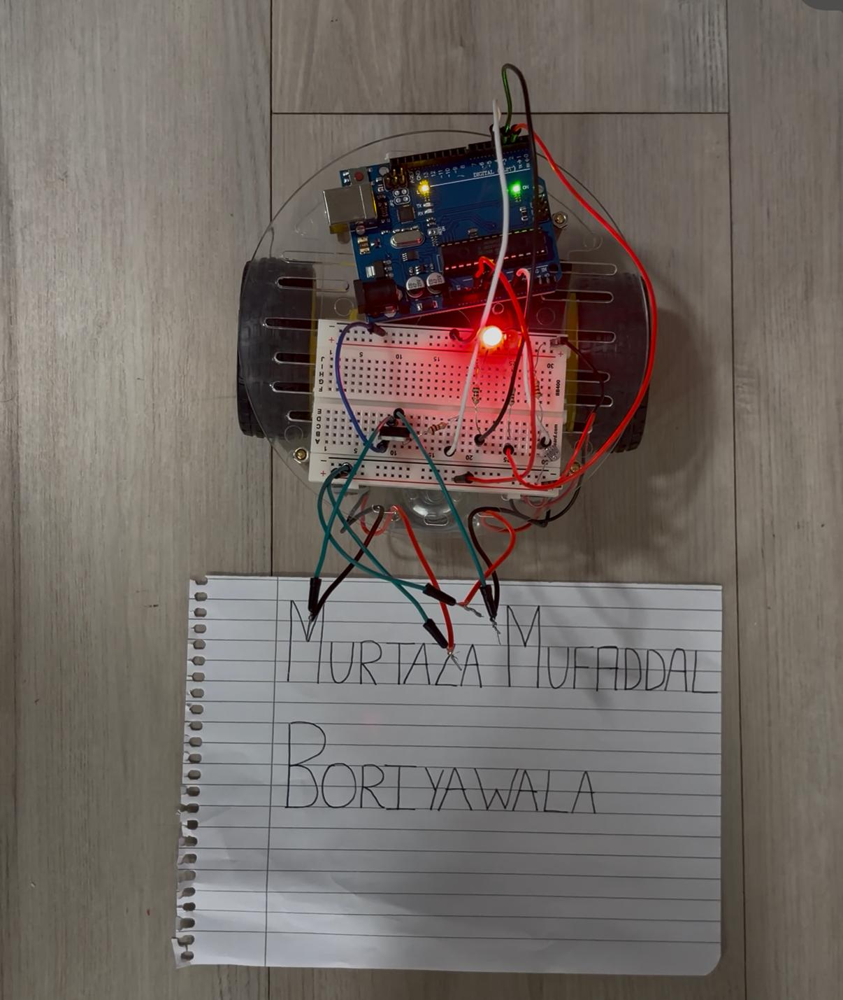
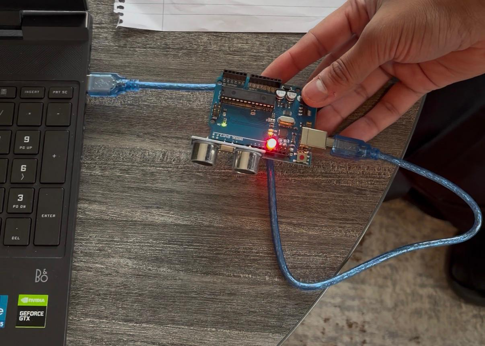
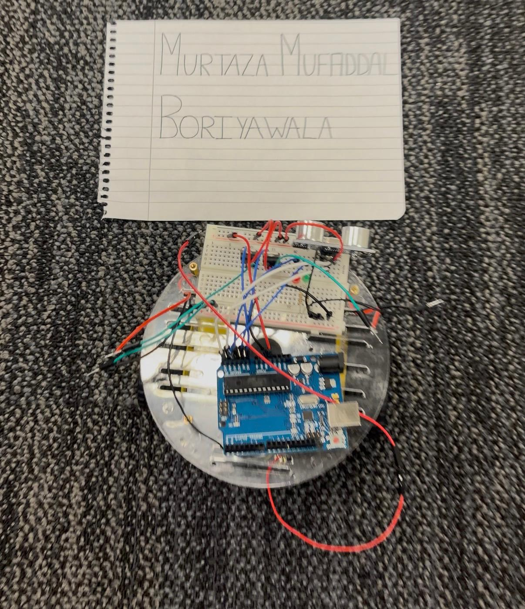

Category: Electronics / Embedded Systems / Prototyping
Light-Activated Arduino Car
Designed and built an Arduino-controlled autonomous car that processes ultrasonic sensor data to navigate and control motors using custom Arduino code and supporting circuitry.
Gallery

Light-activated car prototype
Initial test setup using a CDS cell to detect bright light and control motor activation with LED indicators.

Sensor testing setup
Bench testing of the Arduino, sonar sensor, and LED outputs before full integration.

Integrated car assembly
Fully assembled prototype with motors, wiring, sensors, and power system mounted on the chassis.
Overview
- Goal: Build a small autonomous car controlled by sensor input using Arduino.
- Constraints: Limited power, compact size, simple circuitry, and basic components.
- My role: Designed the circuit, wrote the Arduino code, assembled, tested, and debugged the system.
- Approach: Circuit design → Arduino programming → bench testing → full prototype integration.
What I Learned
- Gained a basic understanding of electronic components such as resistors, LEDs, motors, and transistors.
- Learned how to safely drive motors from an Arduino using a TIP120 transistor.
- Developed experience reading sonar sensor data and using it to control system behavior.
- Improved debugging skills by identifying wiring and logic errors through iterative testing.
Tools & Skills
Arduino
Circuit Design
Prototyping
Testing
Coding
Debugging
Results
- Built an autonomous car that detects obstacles up to 3 feet away using a sonar sensor.
- Implemented obstacle avoidance behavior when objects are detected within the set distance.
- Red LED activates when an object is closer than 3 feet and avoidance logic is triggered.
- Green LED turns on when the path is clear and the car moves freely.